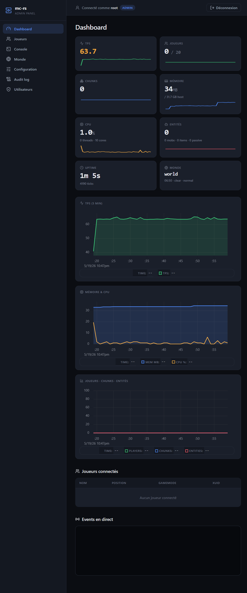
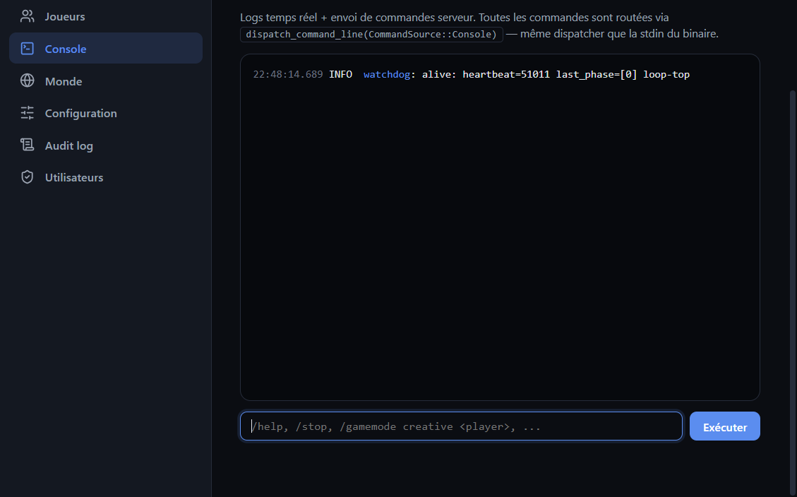
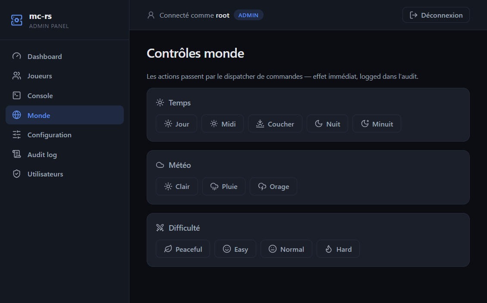
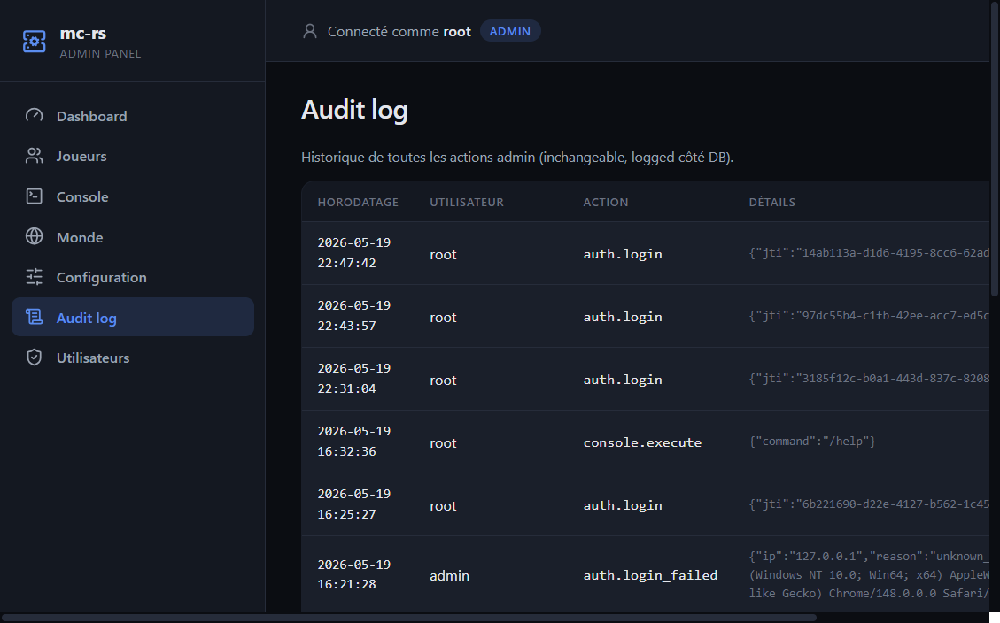
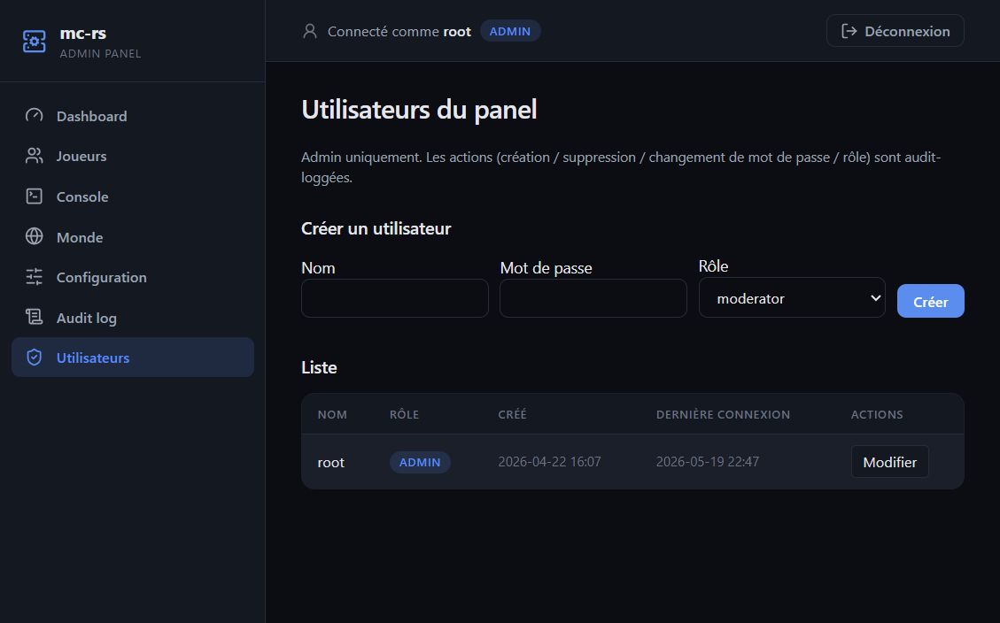
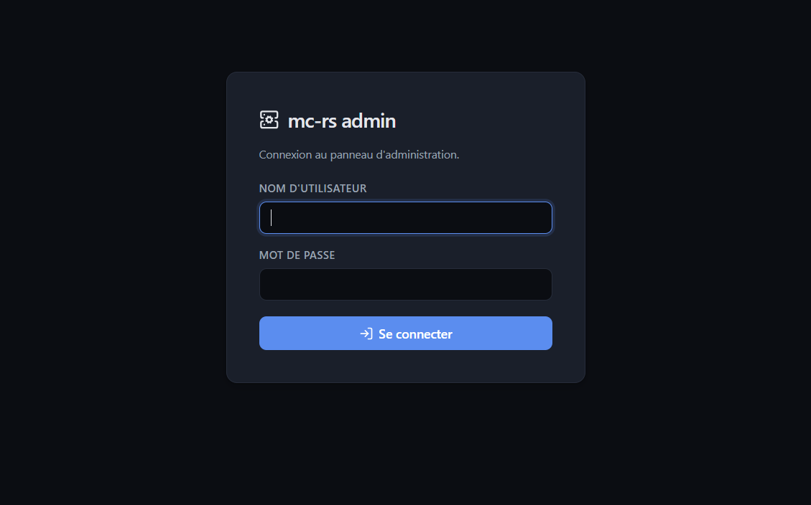

Web Admin Panel
A built-in web back-office (the mc-rs-webui crate) — real-time monitoring, remote control, player management and an audit trail, served straight from the server binary. No external panel to install.
When [webui] enabled = true, the server starts an Axum HTTP server (default http://127.0.0.1:8080) as a separate tokio task. It reads a shared snapshot the game loop pushes ~20 times per second, so the panel never blocks gameplay.
Dashboard
Live metrics — TPS, players, chunks, memory, CPU, entities, uptime and world state — as headline cards with per-card sparklines, plus 5-minute time-series charts (uPlot) and a live connected-players table and event feed.

Pages





/setup.| Page | What it does |
|---|---|
| Dashboard | Live metrics (TPS, players, chunks, memory, CPU, entities, uptime) with 5-minute charts and per-card sparklines. |
| Players | Connected players list with kick / op / deop / gamemode actions. |
| Console | Live log stream + a command terminal. |
| World | One-click time / weather / difficulty controls. |
| Configuration | View & hot-edit server.toml (validated + atomic write). |
| Audit log | Immutable history of every admin action. |
| Users | Admin-only user CRUD (create / delete / password / role). |
How it works
The panel is wired into the server through three lightweight channels — no duplication of game logic:
- Commands — every admin action (stop, kick, op,
/time,/weather…) is pushed into the sameconsole_txchannel that feeds the server's stdin console, then dispatched via the existingdispatch_command_line. The web layer never reimplements gameplay. - State snapshot — an
Arc<RwLock<ServerSnapshot>>is refreshed by the main loop (~20 Hz for TPS / players / chunks / world, ~1 Hz for system metrics and 5-minute ring buffers) and pushed over WebSocket to connected browsers. Zero polling. - Events & logs — server events (join / quit / chat / death / gamemode) and every
tracinglog line are fanned out overbroadcastchannels and streamed live to the dashboard and console.
Authentication
Multi-user auth with Argon2id password hashing and JWT sessions (secret auto-generated and persisted on first boot). Login is rate-limited (5 attempts / 5 min / IP) and the session lifetime is configurable (session_duration_hours). On first boot with an empty database the panel redirects to /setup to create the first administrator; afterwards /setup is locked and login is required.
Storage & stack
Users and the audit log are persisted via a pluggable database layer: SQLite by default (sqlite://webui.db), with PostgreSQL and MongoDB behind feature flags. Optional TLS via the tls feature. The UI is server-rendered (Askama + htmx + Alpine.js + Lucide icons) — no JavaScript build step.
Configuration
[webui]
enabled = true
bind = "127.0.0.1:8080" # use 0.0.0.0 to expose on the network
database_url = "sqlite://webui.db"
session_duration_hours = 24
[webui.tls]
enabled = false # serve over HTTPS
cert_path = ""
key_path = ""0.0.0.0 only behind TLS and a strong admin password — it is an administrative surface, treat it like SSH.
See Configuration for the full option reference.